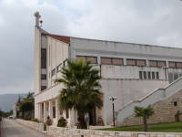
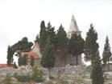
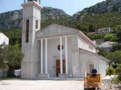
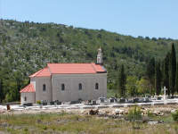
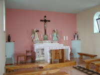
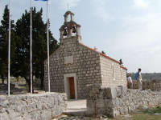
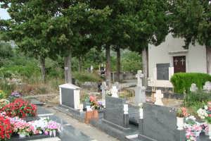
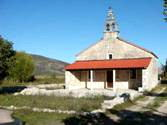
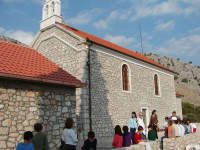
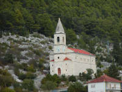

KOMARNA Sightseeing

| |
| |
 Churches close to Komarna
Churches close to Komarna
Churches in the Neretva Area
There are no very old churches in the Neretva Valley even though the area has been Christian since the 300's when the Romans persecuted the early Christians. The reason is that Avatar tribes raided the area in 600's and destroyed all churches and later most of the valley was under Turkish occupation, which also did little to support building of churches.
When the churches are named after a saint, you will see the name
starting Sv. It stands for sveti, the Croatian word for saint.
Churches in your parish
Komarna belongs to the parish of Slivno Ravno. The parish covers the Neretva Delta from Opuzen to Blace at the sea and all the way South to Neum.
It was liberated from Turkish occupation in 1689 and became part of Venice. The present parish was founded with the centre in the most important village of that time, Slivno Ravno. There were many small villages in the area, and many of them are no longer inhabited - including Slivno Ravno.

The biggest population is now around Vlaka where there is a new church and where the parish priest live.
Vlaka - Our Lady of Health, is a big modern church from 1990 that
has a beautiful interior, and it has a central position with regard to
where people live now.
Driving directions to Vlaka: Go from Komarna towards Opuzen. Turn left just after the petrol station and supermarkets and before crossing the bridge over Mala Neretva. Follow the left bank. There are parking spaces at the church.

Raba - This church is located on a hill with a great view of the bay and Peljesac Peninsular. Mass is served here every second week.
Driving directions to church of Raba: From Komarna, drive 4 km towards Opuzen. Turn left towards Raba. After 300 m turn left at a small roadside shrine. This road leads straight to the church.

Blace - It's a former fishing village at the end of the Neretva
Delta. There are still some old fishing boats there. The church is at
the far end of the village.
See directions under "Blace" in the sightseeing section on the website, or take the fast road through the delta. Go to Opuzen. After you have gone past River Mala Neretva look out for a road sign saying "Blace". This is a flat direct road through the delta.

Klek - A new church has been built in Klek in the middle of the town and close to the beach. Klek is 3 km from Komarna in direction Dubrovnik. You can't miss it.

Slivno Ravno - The old main church of the parish lies in a nice surroundings in the mountains. 500 people lived here when the church was built. Now there is only a handful permanent residents. In the church yard, you can find the old church that was used until 1900. It is so small you may mistake it for a tool shack.

Sv. Liberate - Small church, which has been beautifully restored. There is a steep footpath leading to the church and when you are there you are rewarded with a marvellous view of the Neretva delta to one side and the sea and Peljesac to the other side.
Smrdan-Grad - Small church in the ruins of the old fortification and with a very special view of Klek, the sea and Peljesac Peninsula.
Driving directions to Slivno Ravno,
Sv. Liberate and Smrdan-Grad:
Coming from Komarna go on 5.5 km towards Opuzen, look out for a big
crucifix and for a road sign on your right pointing to Slivno Ravno.
Turn sharply right and continue for 1.5 km.
Turn right at a monument and drive along the churchyard up to the
church of Slivno Ravno.
To go to the small church of Sv. Liberate, turn the car and go left
down a very small road.
After 200 meters, you pass a house on your left.
After 400 meters, you reach a T-junction. Park the car here.
Walk right along a stonewall for few meters and turn left into a very
small foot path.
Walk along the footpath up, up and up.
Eventually, you will be rewarded with a magnificent view of the Neretva
Delta and the sea.
Walk - and drive back to the church of Slivno Ravno
Turn left, on the opposing road that took you up here.
Now turn right at the monument and continue.
After 300 m there is a road on your right.
After 100 m is an almost T-junction, where you turn left.
After 100 m you pass a large new house on your left.
After 200 m you pass a roadside shrine on your right.
Take notice after 400 m where you pass an Illyrian
and Bogomil burial
ground where there are tombstones all over the place and some of them
with typical Illyrian decorations.
After another 300 m you pass a road on your right.
After 500 m you reach Smrdan-Grad with the ruins of an old
fortification and the small church overlooking Klek.
When you go back, do have a look at the Illyrian stones (called stecici). It is a quite unique place.

Sv. Spiro in Kremena is not really "in your parish" - only physical. It is an orthodox church and used by the Serbian community that used to be about 50% of the population in Kremena.During the homeland war hotheads wanted to kill Serbians, and they blew up many of the Serbian houses. The Catholic Church and local people protected the Serbians and nothing much happened apart from some destroyed houses. The church was unharmed. It was very unreasonable because all the people were fully integrated and had lived together peacefully for centuries. The only difference between neighbours was their different versions of Christianity.
To find the church - take the road towards Raba, Kremena and Duba. It is on the left off the main road about 4 km from Komarna in direction of Opuzen.
Drive 1 km and keep left in the junction. Drive 420 meter to a sharp right turn and drive 150 meters to where there might be a sign saying Sv. Spiro, but don't count on it.
Park your car here. There is a 700-meter walk to the church. If you are unable to walk 700 meters you can drive most of the way by car, but I recommend that you walk and get a feeling for the landscape.
-
 Take the road
that is paved with concrete.
Take the road
that is paved with concrete. - 50 meters to a crossroad - continue straight ahead
- 120 meters to a T-junction - turn right
- 350 meters to a crossroad - follow the concrete road ahead
- 150 meters along a stone wall and you see the church.
It doesn't look different from other small churches in this area. What identifies it as Orthodox is the shape of the crosses on the door and the Cyrillic letters on the stones in the churchyard.
Churches around Neretva River
Opuzen - Sv. Stjepan, 1883. Situated in the centre of the town. Nice interior.
Metkovic - Sv. Franjo, 1987, Seen to the right just before
Metkovic coming from Opuzen
Sv. Ilija (St. Elias), 1870, in the centre of the old town in Metkovic
and a little up the southern slope of the hill. It has three naves like
a basilica in Roman and neo-Gothic style. There is a lovely view of the
Neretva Valley from the church.

Vid - Sv. Vid. The present small church was built in the 1400's, and it stands on the ruins of a much bigger basilica that was in use from 400's to mid 600's when Narona was abandoned and the church was destroyed by Avar tribes. The Basilica was partly excavated 10 years ago, but the archaeologists had to cover everything again because they could not control the water. They are now waiting for funds to build a drainage system.On the North side of the church, you can find the remains of the earliest place where people were baptised by walking down into a water basin. A very big area around the church is full of early Christian graves and they are very well preserved - thanks to the water that is making it difficult to dig. In the early graves are small glass bottles with the tears of the deceased's family and some gold and silver jewelry - which the archaeologists do not want to talk about because so much has already been stolen and sold both on the black market and to museums all over Europe.

Bagalovici - Our Lady of Carmen, 1865. The church is newly renovated, and it serves three parishes. It is situated high above the valley in a beautiful surrounding and with an interesting churchyard. Below the church is the abandoned village of Bagalovici and remains of ancient civilisations.

Komin - St Anthony, 1924. Build with stones from the island of Brac
Rogotin - Situated 3 km from Ploce
Podrujnica - Is the common name for a number of smaller settlements
on Metkovic-Vrgorac road.